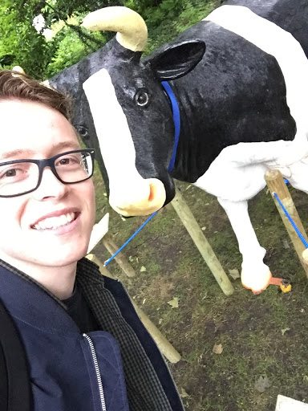
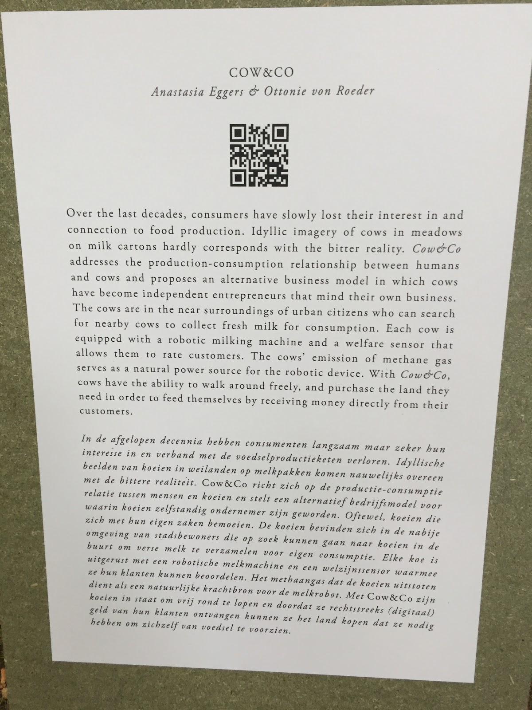

Excursie
Op deze pagina kunt u het verslag van de excursie naar Robotanica vinden.
Robotanica
Op vrijdag 1 juni ben ik naar Robotanica, in Amsterdam, geweest. De tentoonstelling vond plaats in een park niet ver van Station Amsterdam Centraal. Om Robotanica te bereiken moest ik met de veerboot vanaf Station Amsterdam Centraal. Dit was een leuke ervaring, omdat ik vrijwel nooit met een veerboot meevaar. Nadat ik van de veerboot was gestapt moest ik wel eventjes zoeken, maar uiteindelijk heb ik het toch kunnen vinden. Ik heb veel innovatieve ideeën gezien, maar ik ga er slechts één toelichten. Hieronder een selfie van mij en het project die ik het meest interessant vond.
 Toelichting Cow & CoHet idyllische beeld van een koe in het veld op de melkverpakking komt zelden overeen met de werkelijkheid. Maar waarschijnlijk is dit het enige beeld van een koe waar wij als stedelingen zich mee kunnen identificeren. De echte koe en andere boerderijdieren met hun problemen blijven onzichtbaar. In de afgelopen decennia verliezen we als consumenten langzaam de verbinding met de voedselproductie - het gebeurt buiten ons zicht. Zo is het handiger voor ons en efficiënter voor de voedingsindustrie. Het is met name voordelig voor de vlees- en zuivelindustrie, want hoe minder we ons bewust zijn van wat er op industriële landbouwbedrijven gebeurt, hoe waarschijnlijker het is dat we de producten consumeren zonder ons verantwoordelijk te voelen voor hun processen.
Het concept Cow & Co is geïntroduceerd door een groep koeien die hun eigen bedrijf willen starten. Hun business concept? De koe wordt een zelfvoorzienende, melkproducerende machine die verse stadsmelk zelf naar haar klanten in de stad brengt. Het methaangas dat haar maag uitstoot, doet dienst als brandstof voor de melkrobot. De koeien bewegen vrij in de groene gebieden van de stad. Met een online applicatie vinden klanten de dichtstbijzijnde koe. De koeien zorgen goed voor zichzelf, en zijn uitgerust met een welzijnssensor. Daarmee kunnen ze hun klanten beoordelen, maar voorzien ze ook de app van informatie over dokterskosten en noodzakelijk onderhoud aan de melkrobot. Aanvankelijk vind je de koeien van Cow & Co. alleen in de groene ruimtes van de stad. Maar als de koeien winst beginnen te maken kunnen ze zelf land kopen. Daarmee kunnen ze groene ruimtes aan elkaar verbinden en hun territorium beetje bij beetje uitbreiden. De stad wordt daarmee groener en stadsmelk bevindt zich altijd om de hoek.
Cow & Co is bedacht en gemaakt door Anastasia Eggers en Ottonie von Roeder.
Cow & Co
Het project wat mij het meest heeft aangesproken is het project Cow & Co. Dit project spreekt mij aan, omdat ik zelf erg van melk houd en mijn oom bezig is met een project om melk te verkopen op basis van een individuele smaak van een bepaalde koe. (ElkeMelk, http://elkemelk.nl/). Overigens zijn dat niet mijn enige redenen; ik vind dat de consument meer controle en informatie moet kunnen verkrijgen over de melk.
